Costa Cálida · Murcia
Immobilien zum Verkauf in Torre-Pacheco
Häuser rund um die Badelagune des Santa Rosalía Lake & Life Resort und Villen mit eigenem Pool in Roldán und El Alba, wenige Minuten vom Mar Menor. Hier finden Sie die Immobilien, die wir heute in Torre-Pacheco verkaufen, mit einem kurzen Überblick über die Viertel und die echten Kaufkosten.
- 16Immobilien zum Verkauf in Torre-Pacheco
- ab 238.000 €für einen Bungalow
- ca. 25 Min.zum Flughafen Región de Murcia
- ca. 5 kmvon Santa Rosalía zum Mar Menor
Jetzt zu verkaufen
Immobilien zum Verkauf in Torre-Pacheco
Wohnungen, Penthäuser, Bungalows und Villen in geschlossenen Resorts, viele mit eigenem Pool oder Blick auf die Lagune. Die Preise sind die heutigen Angebotspreise; fragen Sie uns nach der aktuellen Verfügbarkeit.
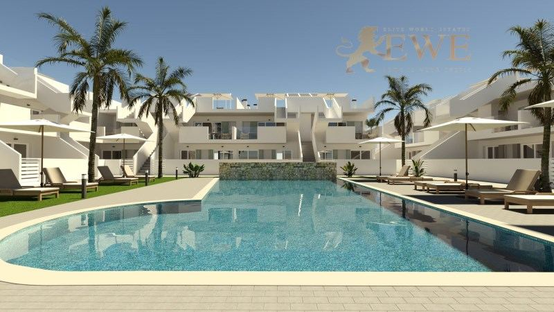
Torre-Pacheco
Cozy bungalow in El Alba Residential in the city of Roldán
238.000 €
3 Schlafzimmer · 2 Bäder · 80 m²Ref. EWE3602
Fertigstellung: 4Q 2027
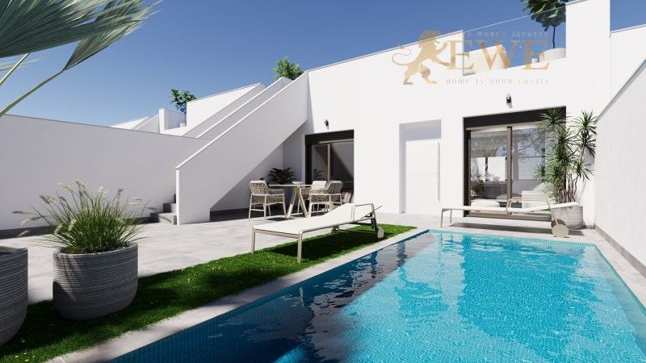
Torre-Pacheco
New villa with pool villa in Roldán
274.900 €
2 Schlafzimmer · 2 Bäder · 82 m²Ref. EWE3600
Fertigstellung: 3Q 2027
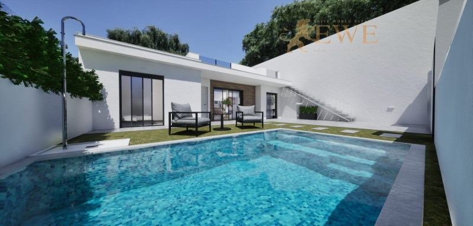
Torre-Pacheco
Single-Storey Villa with Private Pool in Torre-Pacheco
279.900 €
3 Schlafzimmer · 2 Bäder · 84 m²Ref. EWE3828
Fertigstellung: 4Q 2027
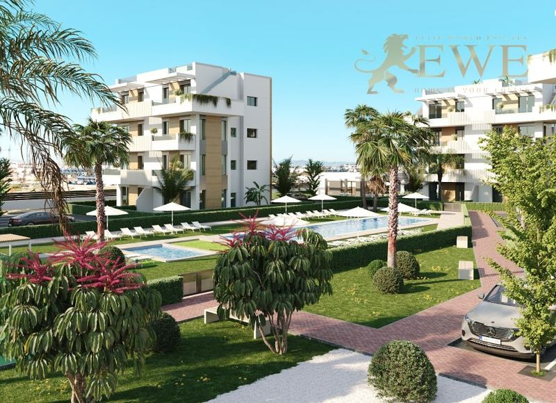
Torre-Pacheco
Fully Furnished Investment Apartments in Santa Rosalía Lake & Life Resort
289.900 €
2 Schlafzimmer · 2 Bäder · 73 m²Ref. EWE3758
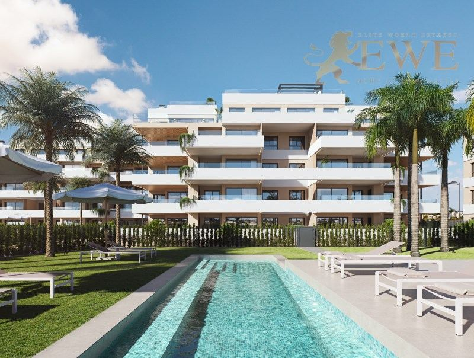
Torre-Pacheco
Modern apartments by the Santa Rosalía lagoon
303.000 €
2 Schlafzimmer · 2 Bäder · 67 m²Ref. EWE3703
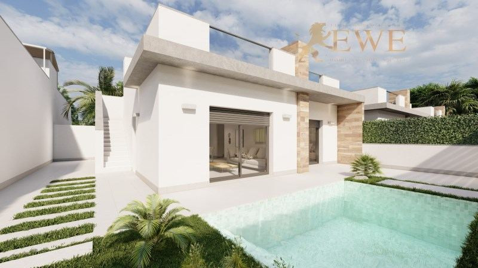
Torre-Pacheco
Magnificent semi-detached villa with pool in El Alba Mediterranean Resort
311.000 €
2 Schlafzimmer · 2 Bäder · 60 m²Ref. EWE3458
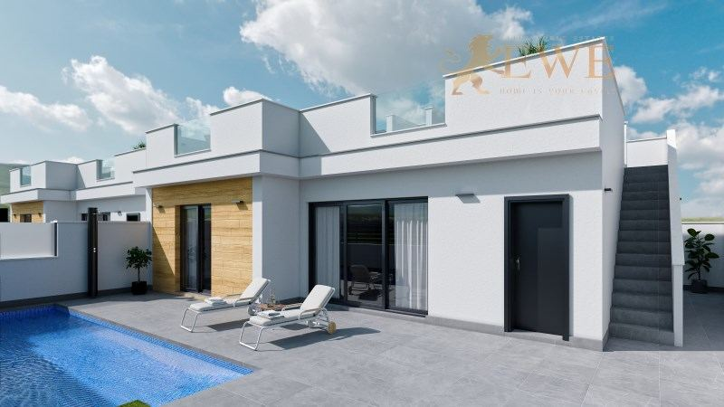
Torre-Pacheco
Finished villa at the luxury El Alba Mediterranean Resort development
311.900 €
2 Schlafzimmer · 2 Bäder · 75 m²Ref. EWE3361
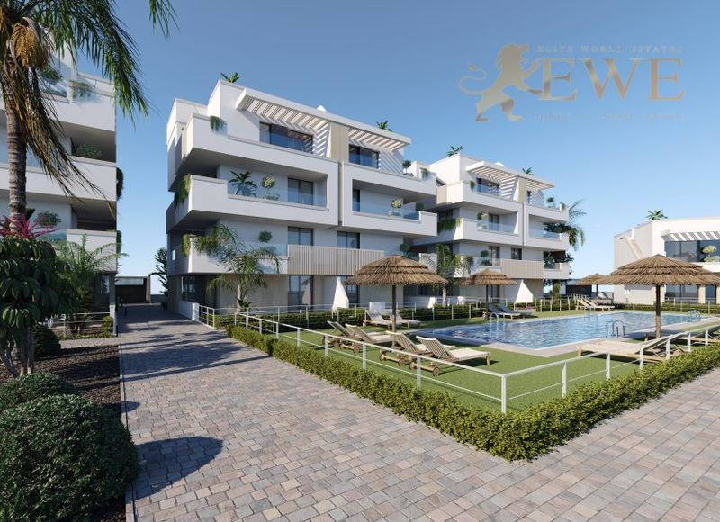
Torre-Pacheco
Exclusive Apartment in Santa Rosalía Lake & Life Resort, Costa Cálida
315.900 €
2 Schlafzimmer · 2 Bäder · 74 m²Ref. EWE3742
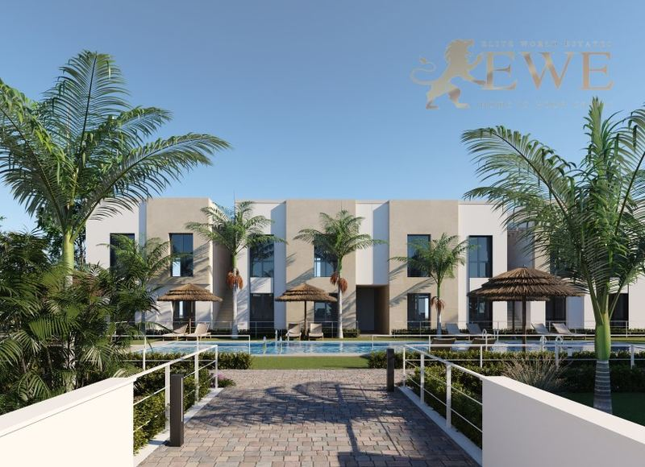
Torre-Pacheco
Exclusive Bungalow in Santa Rosalía Lake & Life Resort, Costa Cálida
334.900 €
2 Schlafzimmer · 2 Bäder · 74 m²Ref. EWE3743
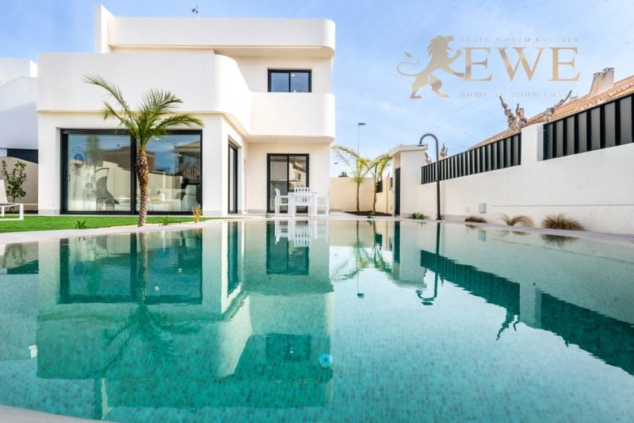
Torre-Pacheco
Designer Ibiza style villa in Roldán, Costa Cálida
419.950 €
3 Schlafzimmer · 3 Bäder · 122 m²Ref. EWE3710
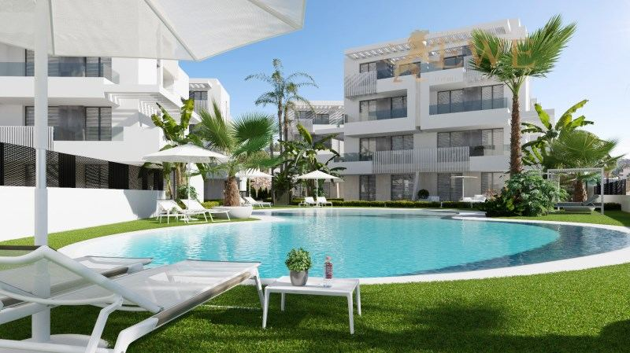
Torre-Pacheco
Modern apartment with lake views in Santa Rosalía Lake & Life Resort Murcia
499.000 €
3 Schlafzimmer · 2 Bäder · 98 m²Ref. EWE2156
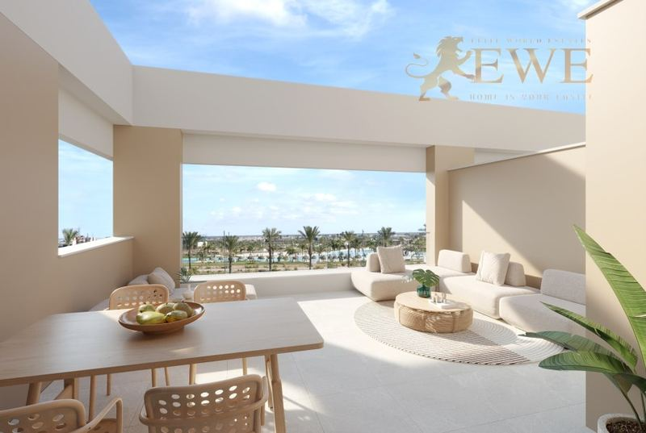
Torre-Pacheco
Elegant penthouse with large terrace in Santa Rosalía
525.000 €
2 Schlafzimmer · 2 Bäder · 77 m²Ref. EWE3195
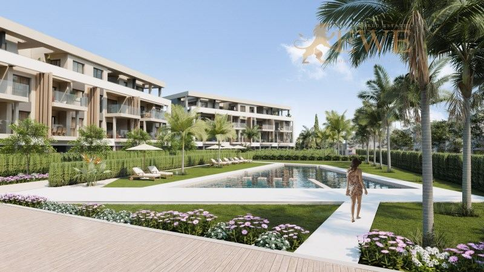
Torre-Pacheco
Stunning penthouse with large sun terrace in Santa Rosalía Lake & Life Resort Murcia
529.000 €
3 Schlafzimmer · 2 Bäder · 90 m²Ref. EWE2406
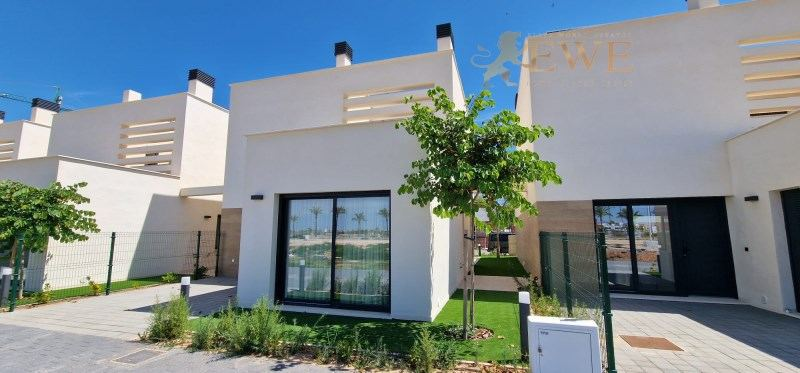
Torre-Pacheco
A finished home at Santa Rosalia Lake and Life Resort.
565.000 €
3 Schlafzimmer · 3 Bäder · 122 m²Ref. EWE3331
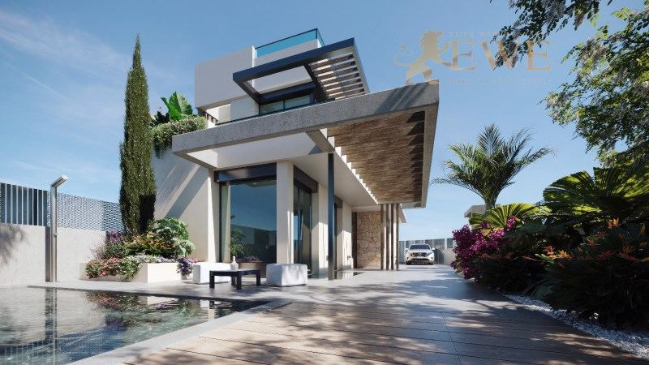
Torre-Pacheco
Exceptional Villa with Solarium and Private Pool in Santa Rosalía Resort
659.900 €
3 Schlafzimmer · 3 Bäder · 142 m²Ref. EWE3745
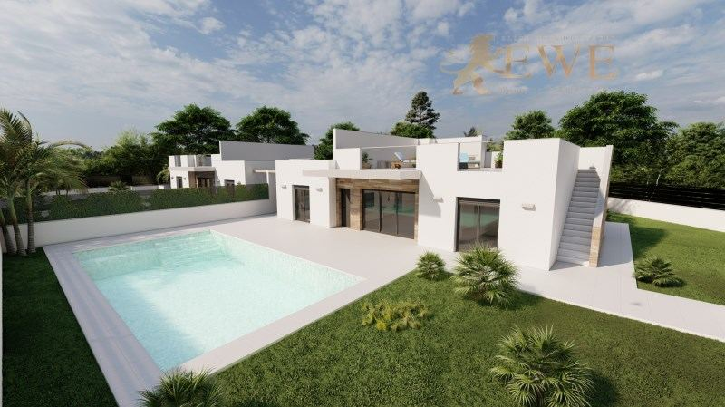
Torre-Pacheco
An exquisite villa with a large swimming pool at El Alba Mediterranean Resort
674.500 €
4 Schlafzimmer · 3 Bäder · 148 m²Ref. EWE3601
Die Stadt
Leben in Torre-Pacheco
Torre-Pacheco ist eine Gemeinde mit rund 40.000 Einwohnern im Campo de Cartagena in der Region Murcia, eine kurze Fahrt landeinwärts vom Mar Menor. Die meisten unserer Immobilien hier liegen in modernen, geschlossenen Resorts für Menschen, die Platz, Sonne und einen Pool suchen, nahe an den Stränden von Los Alcázares.
Das bekannteste ist das Santa Rosalía Lake & Life Resort, etwa 5 km vom Mar Menor. Sein Herzstück ist eine türkisfarbene Badelagune von rund 1,6 Hektar mit weißen Sandstränden und zwei Inseln, in einem Park von rund 12 Hektar. In der Nähe bieten Roldán und das Wohngebiet El Alba Villen und Bungalows mit eigenem Pool für weniger Geld.
Golfplätze, Supermärkte und die Strände von Los Alcázares sind wenige Minuten entfernt. Der Flughafen Región de Murcia ist mit dem Auto etwa 25 Minuten entfernt, der Flughafen Alicante etwas über eine Stunde.
Wo kaufen
Die wichtigsten Viertel von Torre-Pacheco
Santa Rosalía Lake & Life Resort
Ein geschlossenes Resort rund um eine große Badelagune mit Stränden, etwa 5 km vom Mar Menor. Wohnungen, Penthäuser, Bungalows und Villen.
Roldán
Ein kleiner Ort in der Gemeinde, mit Läden und neuen Villen und Bungalows mit eigenem Pool.
El Alba Mediterranean Resort
Ein Wohngebiet mit modernen Villen und Bungalows, viele mit eigenem Pool, nahe Roldán.
Ort Torre-Pacheco
Der Hauptort, mit Geschäften, Märkten, Schulen und Gesundheitszentren, für den Alltag das ganze Jahr.
Budget
Was der Kauf in Torre-Pacheco kostet
Zum Kaufpreis kommen Steuern und Gebühren. Für eine neue Immobilie zu 315.900 € sind das zum Beispiel 31.590 € Mehrwertsteuer und 4.738 € Stempelsteuer, dazu Notar, Grundbuch und Anwalt. Für Bestandsimmobilien gelten andere Steuern, fragen Sie uns also immer nach der genauen Summe für die Immobilie, die Ihnen gefällt.
| Neubau | 10 % Mehrwertsteuer (IVA) + 1,5 % Stempelsteuer (AJD) |
|---|---|
| Bestandsimmobilie | 7,75 % Grunderwerbsteuer (ITP) |
| Notar, Grundbuch, Anwalt | ca. 1,5–2,5 % des Preises |
| Jedes Jahr | Grundsteuer IBI und Gemeinschaftskosten, je nach Immobilie |
Fragen
Immobilienkauf in Torre-Pacheco: Fragen und Antworten
Was kostet eine Immobilie in Torre-Pacheco?
Unsere Immobilien in Torre-Pacheco beginnen heute bei 238.000 €. Wohnungen in Santa Rosalía gibt es ab etwa 290.000 €, Penthäuser ab etwa 525.000 €, Villen mit eigenem Pool ab etwa 275.000 € in Roldán bis 675.000 € in El Alba.
Was ist das Santa Rosalía Lake & Life Resort?
Ein geschlossenes Wohnresort in Torre-Pacheco rund um eine große Badelagune mit weißen Sandstränden. Lagune und Anlagen sind für Bewohner und ihre Gäste und werden über die Gemeinschaftskosten bezahlt. Lesen Sie unseren Ratgeber zu Santa Rosalía.
Wie weit ist Torre-Pacheco vom Strand und vom Flughafen entfernt?
Die Strände von Los Alcázares am Mar Menor sind mit dem Auto etwa 5 bis 10 Minuten entfernt. Der Flughafen Región de Murcia ist etwa 25 Minuten entfernt.
Welche Kosten kommen zum Kaufpreis hinzu?
In der Region Murcia zahlen Sie bei einem Neubau 10 % Mehrwertsteuer und 1,5 % Stempelsteuer, bei einer Bestandsimmobilie 7,75 % Grunderwerbsteuer. Notar, Grundbuch und Anwalt kosten zusammen etwa 1,5–2,5 %.
Können Ausländer in Torre-Pacheco eine Immobilie kaufen?
Ja. Jeder kann in Spanien eine Immobilie kaufen. Sie brauchen eine spanische Steuernummer (NIE) und meist ein spanisches Bankkonto, und wir helfen Ihnen bei beidem. Mehr dazu in unserem Ratgeber zur NIE-Nummer.


Sie suchen ein Zuhause in Torre-Pacheco?
Nennen Sie uns Ihr Budget und Ihre Wünsche. Wir antworten innerhalb eines Werktags, auf Deutsch, Englisch, Spanisch oder Polnisch.